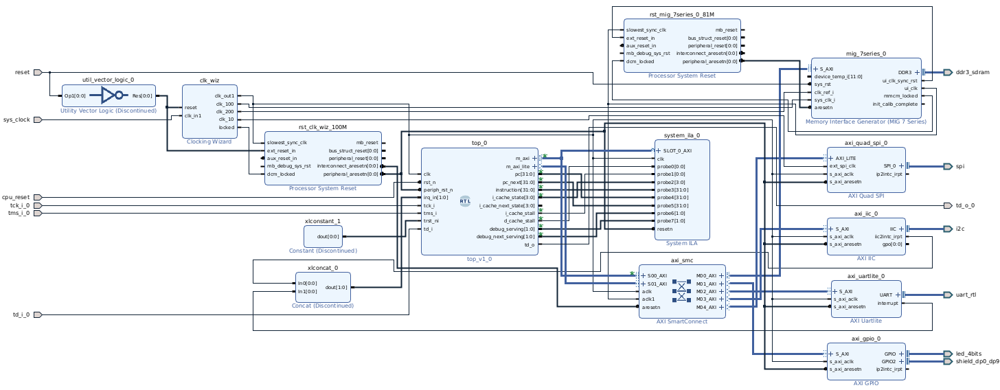

Holy Core - User Docs

Overview
The HOLY CORE is an MCU class open-source core, made for learning and experimentation purposes, targeting hobbyists and very high stakes and critical industrial applications, like running PONG or DOOM.
Target Audience
The target audience of this document are people who just want to use the core in their own project (for whatever reason) or simply learn more about the HOLY CORE before building it / out of curiosity.
If you are an RTL dev looking to modify the inner HDL of the HOLY CORE, refer to the DEV DOCS.
If you are a learner and just want to build the core yourself, go back to the repo and read the main "readme" file to start learning.
The system is not very configurable. It provides a fixed, slow and inefficient platform. Its only strength is that it works, is 100% Compliant to RISC-V and is somewhat fast enough to run DOOM at slideshow grade speeds.
Are you still here? Do you still want to use this core? Good, we don't need speed anyway, do we?.
Jokes aside, even though the HOLY CORE was not built with any sort of optimisation in mind, it was built to work and actually be usable while still being as simple as it can be in its architecture.
You can easily modify it on the fly if you take a couple hours to figure out how the project is laid out, which is exactly what is explained in this document as well as in the dev docs.
Project Key Features
The Platform / SoC
The project comes with a fpga/holy_top.sv file. This main wrapper provides all the basics that surrounds the core.
- The HOLY CORE
- A debug module (from Pulp Platform)
- A CLINT (to have soft interrupts, timers and all that jazz)
- A PLIC (to have external interrupts support)
- A boot ROM
- A software framework (a shitty and non-flexible library)
- External access AXI & AXI LITE interface for integration on larger SoCs with actual peripherals
- The HOLY CORE Platform has no custom peripherals other than the ones listed above. Generic peripherals are yours to add depending on your needs. Guidelines are given in the document, see Getting Started.
The Core Itself
- A 32-bit RISC-V CPU
- 100% RISC-V compliant (according to the RISCOF framework)
- A single cycle CPU, so simple in its architecture that even I wonder how it even runs any program at all without breaking.
- Supports base ISA + M extension + privileged ISA (RV32I_Zicsr Privileged)
- Machine mode only
Project Folder Structure
The HOLY CORE's repo is kinda special for you, user, as it was built primarily to teach its contents. The repo is thus divided in chapters but as a user, you'll mostly be interested in the latest one, in this case: the folder 3_perf_edition/.
Each chapter is a "CPU project" in itself and you will only be concerned about what is in this subfolder.
HOLY CORE COURSE
├── 0_single_cycle_edition Not suitable for real use
│ ├── ...
├── 1_fpga_edition Not suitable for real use
│ ├── ...
├── <latest_edition> Contains bugs on advanced programs
│ ├── ...
├── 3_perf_edition
│ ├── Dockerfile Helper to quickly run RISCOF tests
│ ├── example_programs Contains example software and a makefile to build it
│ ├── fpga Contains the holy_top.sv wrapper & real program simulation utils for debugging
│ ├── hc_lib Holy Core's library
│ ├── Makefile To cleanup the project when needed
│ ├── packages Holy Core interface and types definitions
│ ├── readme.md informative document
│ ├── requirements.txt some CI bloat
│ ├── riscof Compliance test utils
│ ├── src Actual HDL code is here
│ ├── tb Module unit testing and basic CORE testing (quicker than riscof for quick validations)
│ └── vendor Vendor pulled code
├── LICENSE
├── readme.md
├── setup.md
├── todo.md
└── user_docs
├── docs
└── mkdocs.yml
Getting Started
It depends on what you want to know.
- If you want a really quick guide to just build a bitstream in vivado / run basic simulation, go to the quickstart guide.
- If you have the holy core platform up and running and just want to know how to use it for your projects, start with Using the Holy Core Platform
- If you want to know how to build a HOLY CORE based SoC ang get it running on your own FPGA platform, without caring about the actual software usage (yet), go to the Practical FPGA Usage Guidelines section.
Quickstart
Note
Get the HOLY CORE running in simulation or on FPGA hardware. This part targets people who have the exact right setup and just want a quick demo running before moving on to actually using the core.
Quick Reference
| Task | Command |
|---|---|
| Run simulation | cd <latest_edition>/fpga && make |
| Rebuild ROM | cd <latest_edition>/fpga/ROM && make |
| Run unit tests | cd <edition>/tb && pytest test_runner.py |
| Generate bitstream | vivado -source .../arty_S7/holy_vivado_setup.tcl |
| Start debug server | openocd -f .../arty_S7/holy_core_openocd.cfg |
| Load program via GDB | riscv64-unknown-elf-gdb <elf> → target remote :3333 → load |
Prerequisites
Before you begin, make sure you have the appropriate tools installed depending on your target.
Simulation
- Cocotb — Python-based hardware verification framework
- Verilator — open-source Verilog simulator
- GTKWave — waveform viewer (optional, for debugging, you can use your favorite tool here)
FPGA
To use the HOLY_CORE on FPGA quickly, you need Vivado (Xilinx toolchain), required for quick bitstream generation using the TCL script.
The base SoC comes with a simple ROM that blinks an LED, to load other programs, you'll need to debug using the associated tools:
- OpenOCD — for JTAG debugging
- RISC-V GCC toolchain (
riscv64-unknown-elf-gcc) - A USB-JTAG adapter (e.g., Digilent HS2) for loading programs via GDB
Full Setup Instructions
See the Setup Manual/Prerequisites for detailed installation steps.
Simulation Quickstart
Running the Default Simulation
From the repository root:
cd <latest_edition>/fpga
make
This compiles the boot ROM and runs the HOLY_CORE in simulation using Verilator and Cocotb.
Writing Your Own Test Program
-
Edit the boot ROM assembly:
vim <latest_edition>/fpga/ROM/rom.S -
Recompile the ROM:
cd <latest_edition>/fpga/ROM make -
Run the simulation:
cd .. make
Running Unit Tests
To run the module-level testbenches:
cd <edition>/tb
pytest test_runner.py
This executes quick reference tests on individual modules, including a basic HOLY_CORE integration test.
Running RISCOF Compliance Tests
For full ISA compliance verification:
cd <latest_edition>/riscof
Docker Available
A Docker container is provided for easy RISCOF setup. See the README in that directory for details.
FPGA Quickstart
Supported Boards
| Board | Status |
|---|---|
| Arty S7 | Fully supported |
| Zybo Z720 | Needs update |
| Basys3 | Needs update |
Portability
The <latest_edition>/fpga/holy_top.sv module is vendor-agnostic. Vivado is only used to add peripherals (UART, etc.). You can create your own SoC in fpga/<your_platform>/. More infos in the more in depth guide
Step 1 — Generate the Bitstream
vivado -source <latest_edition>/fpga/arty_S7/holy_vivado_setup.tcl
Vivado will create the block design and start synthesis/implementation automatically.
Step 2 — Flash and Boot
- Program the FPGA with the generated bitstream
- Press the reset button (resets peripherals)
- Release the CPU reset switch (
SW2on Arty S7 — check your board's constraints file)
The CPU starts execution at PC = 0x0, running the boot ROM. By default, this blinks an LED in a loop.
Step 3 — Load Custom Programs via JTAG
To run more complex software, use OpenOCD and GDB.
Start the debug server:
openocd -f <latest_edition>/fpga/arty_S7/holy_core_openocd.cfg
JTAG Adapter Required
This requires a USB-JTAG adapter. The config is tested with Digilent HS2 rev. A.
If you have a different adapter, open an issue and we'll help you create a config file.
Connect with GDB and load a program:
riscv64-unknown-elf-gdb <latest_edition>/example_programs/ping_pong/ping_pong.elf
(gdb) target remote :3333
(gdb) load
(gdb) continue
The program is loaded at base address 0x80000000 and execution begins:

Holy Core Platform
Description & Top I/Os
Here is a scheme that recaps everything provided by the holy_top.sv top module:

As stated earlier, the project "only" provides a holy_top.sv file that contains all mandatory peripherals to ensure the debug, interrupts and timer support, as well as a fixed boot ROM.
So let's just say you have complete freedom over the platform (mainly because you have to add the basics like UART or GPIO by yourself).
Here are the ports you will have to work with:
| Port | Direction | Width | Description |
|---|---|---|---|
clk |
input | 1 | CPU clock |
rst_n |
input | 1 | Active low reset |
periph_rst_n |
input | 1 | Peripheral reset (active low) |
m_axi_* |
in/out | - | AXI4 Full interface to external RAM |
m_axi_lite_* |
in/out | - | AXI4-Lite interface (crossbar to external peripherals) |
irq_in |
input | NUM_IRQS | External interrupt requests |
tck_i |
input | 1 | (for debug module) JTAG clock |
tms_i |
input | 1 | (for debug module) JTAG mode select |
trst_ni |
input | 1 | (for debug module) JTAG reset (active low) |
td_i |
input | 1 | (for debug module) JTAG data in |
td_o |
output | 1 | (for debug module) JTAG data out |
... |
output | - | Some misc on chip debug signals (I gotta get rid of these one day but these are useful sometimes, so they remain) |
tb_debug_req |
input | 1 | "FPGA" test debug request to provoke a debug jump in a simulation environment |
Note that we separate peripheral and CPU reset. This is because I did not succeed in having one single reset signal. I gotta make a proper reset controller that handles this but for now, when using this platform, it is better to hold CPU reset and perform a proper complete peripheral reset before releasing the CPU.
Where are the parameters?
"Parameters" are not described here, the reason is in the next sub section ;)
External interfaces: Cache Usage for the User (Via CSRs)
Also note that we have 2 interfaces to exchange data with the "outside world" (i.e. the rest of your SoC): m_axi_* and m_axi_lite_*.
This is because the HOLY CORE has a small yet existent cache system, one for instructions (I$) and one for data (D$).
Note
You can disable D$ by setting the ONLY PARAMETER OF THE ENTIRE HOLY CORE: DCACHE_EN to 0 in the holy core's instantiation in holy_top.sv. You can also set the cache sizes depending on available FPGA resources in holy_core.sv in the cache instantiations. This is a pretty straightforward process if you already did some HDL work before. Otherwise, go and follow the holy core course ;)
These caches MAY cause problems when trying to exchange data with MMIOs (data wise) and the debug module (instruction wise). These need to NOT be cached. This is why the HOLY CORE platform allows the user to set uncached ranges using the following CSRs:
| CSR NAME | ADDRESS | ROLE |
|---|---|---|
flush_cache |
0x7c0 | write 1 to flush the data cache |
data_non_cachable_base |
0x7c1 | base addr of non cachable data space |
data_non_cachable_limit |
0x7c2 | limit addr of non cachable space |
instr_non_cachable_base |
0x7c3 | base addr of non cachable instruction space |
instr_non_cachable_limit |
0x7c4 | limit addr of non cachable instruction space |
Note
See Address space section for generic address layout.
For example, this code sets up everything except RAM space (starting at 0x80000000) and up as non cachable (this also sets PLIC as cachable, I gotta do something about that... but yeah who cares?)
# cache setup
li t0, 0x00000000
li t1, 0x7FFFFFFF
csrrw x0, 0x7C1, t0
csrrw x0, 0x7C2, t1
csrrw x0, 0x7C3, t0
csrrw x0, 0x7C4, t1
When you make a request to an uncached memory region, the request will be routed to the AXI LITE interface and if the requested address is in the cached range, it takes the AXI FULL route.
Address space
The holy_top.sv module is considered a basic SoC as it already has some peripherals. It comes with a basic fixed memory map.
Your own peripherals will be accessed via the "external" address space, through the TOP axi interfaces.
| Region | Start Address | End Address | Do you have to add this? |
|---|---|---|---|
| Boot ROM | 0x00000000 |
0x0FFFFFFF |
No, it's in holy_top.sv |
| External Peripherals | 0x10000000 |
0x2FFFFFFF |
YES, LITE requests here will go STRAIGHT to the outside world! |
| Debug Module | 0x30000000 |
0x3FFFFFFF |
No, it's in holy_top.sv |
| CLINT | 0x40000000 |
0x7FFFFFFF |
No, it's in holy_top.sv |
| External RAM | 0x80000000 |
0x8FFFFFFF |
YES, LITE requests here will go STRAIGHT to the outside world! |
| PLIC | 0x90000000 |
0xFFFFFFFF |
No, it's in holy_top.sv |
Warning
This holy_top.sv internal address map only applies to the AXI_LITE interface.
That's because, in theory, AXI FULL being ONLY USED to retrieve RAM stored data.
Therefore, AXI FULL requests coming from the HOLY CORE will ALL be DIRECTLY ROUTED to the main external m_axi interface as it has no business to do with the internal component that are all accesses via uncached transaction, i.e. via AXI LITE.
Refer to the scheme for a better visual explaination.
Clocking
My tests on a Zybo Z7-20 and Arty S7-50 resulted in a max speed of 32MHz, I usually run it at 30MHz to make sure I close timing. This is slow but who cares?
Internal AXI "buses" run at the same speed as the HOLY CORE. Overall, the whole system runs at the same speed and a single clock is needed.
Because the CORE uses AXI interfaces, you can run the rest of your SoC at different clock speeds, as long as you have correct CDC techniques in place so that the axi handshakes happen without problems.
Trapping
When a trap is triggered, the HOLY CORE jumps to the mtvec CSRs stored address, no offset will be applied and the trap handler has to test mcause to determine what to do.
Trap Example
You have the example_programs/pong example if you need software guidance on building interrupt software or guidance on handling exceptions.
The HOLY CORE will then be flagged as in "trap mode" and will only exit that mode when mret is detected.
Watch Out when Debugging!
This means if you trigger a trap or an exception during debugging, reset the core after debugging and before restarting your program to reset the trap mode and avoid weird execution problems.
Interrupts
The HOLY CORE supports all types of machine mode interrupts and you can configure these by the usual standard RISC-V procedure using the associated CSRs (mstatus, mie, etc.). Refer to the CSR list in this document or the RISC-V specs for more info and this will not be detailed here.
Interrupt Example with UART
You have the example_programs/pong example if you need software guidance on building interrupt software.
If you read the top ports table, you saw that the holy_top.sv module has a irq_in port (NUM_IRQS wide). These are external interrupts coming from whatever peripheral you want, this can be a UART controller, a GPIO interface, etc.
These feed directly into the PLIC.
Platform Level Interrupt Controller (PLIC)
Asserts ext_irq on the core.
The PLIC takes external, async requests from irq_in and formulate a single clear and synchronous external interrupt request for the HOLY CORE.
In the trap handler, the HOLY CORE should then consult the PLIC to figure what peripheral caused the trap, handle it and then signal the PLIC this trap has been handled.
Interrupt Example with UART
This procedure is used in the example_programs/pong example if you need software guidance on building interrupt software.
Here is the PLIC memory map:
| Address Offset | Register | Description |
|---|---|---|
0x0000 |
ENABLE |
Bitmask: enables/disables each interrupt source. Bits [NUM_IRQS-1:0]. |
0x0004 |
CONTEXT_CLAIM_COMPLETE |
Read: claim highest priority pending IRQ. Write: complete IRQ by writing same ID back. |
Info
This PLIC module is not 100% Compliant to the PLIC specs but implements all the basics to handle interrupts in a standards "ready to go" way. It lacks advanced settings like priorities but who cares.
Info
Note this PLIC latches on incoming request when IDLING, meaning the RISING EDGE on irq_in is what causes an external interrupt request, even if it goes down before the core had time to handle it. This behavior can be modified in the HDL pretty easily if needed, as it was quickly added after initial development (way more practical and adapted).
Core Level Interrupt Controller (CLINT)
Asserts soft_irq and timer_irq on the core.
The CLINT is a standard one, pretty straightforward to use.
Some timer and time comparator registers are here to assert a timer interrupt (timer_irq). And a soft interrupt register will automatically assert soft_irq.
Here is the CLINT memory map:
| Address Offset | Register | Description |
|---|---|---|
0x0000 |
msip |
Software interrupt, only the LSB will trigger the output interrupt request. Others will be ignored. |
0x4000 |
mtimecmp[31:0] |
Low word for the 64 bits mtimecmp |
0x4004 |
mtimecmp[63:32] |
High word for the 64 bits mtimecmp |
0xBFF8 |
mtime[31:0] |
Low word for the 64 bits mtime |
0xBFFC |
mtime[63:32] |
High word for the 64 bits mtime |
Nested traps
No nested traps support, did you really think I would implement that?
Default BOOT sequence
When booting (after releasing CPU reset), the default PC will be 0x0 and All cache related CSRs will be set to declare the entire memory as non-cachable.
This means the first requests (instructions fetch) will go directly to the boot ROM through the internal AXI LITE interface.

By default, the BOOT ROM contains an infinite loop (with some GPIO interaction to turn an LED on and off, to clearly signal the CPU is alive when using it on FPGA).
The boot ROM can be modified in ./fpga/ROM/rom.S where you'll have to run make to generate a verilog ROM from your assembly code. The ROM changes will only "apply" once you re-run the synthesis and implementation process.
Having an infinite loop there "parks" the HOLY CORE and allows the user (you) to connect via OpenOCD/GDB and do whatever you want (especially load a program).
Info
More information on debugging in On-chip Debugging Solutions.
TODO: add a real bootloading solution.
On-chip Debugging Solutions
Context
Here is a little scheme of the setup (Explanations below):

The debug module is a great tool here, it acts as a master in the SoC, meaning, while connected to it via a debugger, we can poke registers to inspect what is going on in the peripherals, read memory to check corruption or load an entirely new program in said memory! This is both extremely powerful and useful.
This debug module can also send debug requests to the core, making the HOLY CORE jump to the debug module's address space where we can make the core do whatever we want, but this complexity is abstracted away to the user, all the user actually does is send GDB debug commands to poke around and control the core.
As stated before, by default, the CORE boots on the boot ROM where some infinite LED on/off loop awaits to put the core in a "parked" state (i.e. it will not go anywhere and stay stable).
To get out of this loop, one can use a debugger.
If you look closely at the SoC scheme or the top I/O table, you'll see some "JTAG SIGNALS" signals coming in and out of the holy_top.sv module.
These JTAG signals talk directly with the debug module, which is not mine and pulled from a pulp platform's repo.
The debug module's job is to translate JTAG debugging instructions into real CPU interactions to apply the said debugging instructions. This whole part is abstracted away for the user and is not relevant here.
Debugging Setup
Warning
Before doing all this, a working SoC with memory and some peripherals available is mandatory! Follow the Practical FPGA Usage Guidelines if you do not have this yet.
To debug the core, you need the system to be running (i.e. no reset) and the core to be in a stable state (e.g. running a program or parked in an infinite loop).
Note
The section "Practical FPGA Usage Guidelines" will help you fulfill the first step of getting the core running and parked.
Once this is done, you need a way to generate los famosos "JTAG Signal" to debug the core. This will be done by a piece of software called OpenOCD. OpenOCD's role is to serve as a translation layer between your main debugger (we'll come to that in a sec) and your system.
This software will run on your very own PC, from which you will conduct all debugging operations.
But, you may already know that your computer does not have any way to transport JTAG signals. This is a very important observation, in fact, all our computers have is USB ports. Well, lucky us! Some cables exist for that (called JTAG programming cables). This module will translate USB signal into real JTAG signals that the on chip debug module will understand.
Recommended JTAG Programming Cable
I recommend the HS2 because it's what I use, but you can use any cable that claims to convert USB into JTAG, just make sure it is supported by OpenOCD. I will not detail how to adapt the setup to other programming cables.
To recognize and use this cable, OpenOCD needs a config file, that is already written, but you may have to adapt it depending on your exact JTAG programming cable. You'll also need to route the JTAG signals from the cable into the holy_top.sv top ports using some FPGA constraints.
Once everything is plugged in correctly, run:
openocd -f ./fpga/arty_S7/holy_core_openocd.cfg
With holy_core_openocd.cfg being the configuration file you adapted to your cable. OpenOCD should signal you it found the HOLY CORE's debug module and that it's waiting for instructions.
You will then open gdb with an elf program you want to execute and connect like so:
riscv64-unknown-elf-gdb ./example_programs/pong/pong.elf
(gdb)target remote :3333
Remote debugging using :3333
0x800004a4 in main ()
(gdb) load
Loading section .text, size 0x72c lma 0x80000000
Loading section .rodata, size 0x10f lma 0x8000072c
Loading section .rodata.str1.4, size 0x3 lma 0x8000083c
Start address 0x80000000, load size 2110
Transfer rate: 294 KB/sec, 703 bytes/write.
(gdb) c
Continuing.
And the program will then execute. You can use various GDB tricks to debug your programs, but these practical aspects are discussed in the software guidelines.
FPGA Usage Guidelines
This part of the user guide is made to guide SoC designers to integrate the HOLY CORE into their system and get it running.
Recommended FPGA board: Arty S7-50. More details below.
How to actually flash the HOLY CORE platform on my FPGA?
This sub-part will be divided in 2 use cases (Xilinx and non-xilinx) so you can start exploring solutions right away.
Info
Before jumping into this part, take a minute to read the SoC description section to know what "product" you are dealing with and what you actually need to implement.
Point of Attention Before Running Synthesis
The holy_top.sv top module comes with a bootROM to feed the core with some basic instructions when releasing the CPU reset. You should build the said ROM before running synth to get a verilog ROM output. Make sure you check the code being built before building. I suggest you create a nop loop or a LED on/off loop. More info in BOOT ROM the dedicated section.
If you use xilinx FPGAs
Using Xilinx's FPGAs will greatly simplify the task for you. Even though the holy_top.sv module is the main output product here, the care had to be ported to FPGA to be tested, and lucky you, I use Xilinx tools, more specifically, an arty s7-50 embedding a Spartan7 FPGA, some RAM, etc...
That means you have full TCL scripts to build an entire pre-made SoC that has
- RAM support using (see warning below)
- UART (and UART interrupts)
- I2C controller
- SPI controller
- A huge AXI interconnect
- An ILA for extreme debugging scenarios
- etc...
Warning
The RAM is only compatible with the ARTY S7-50, you'll need to get rid of this and add your own memory solution if you do not use this exact board.
To get this "starter SoC" going:
(HOLY_CORE_COURSE/)$ vivado -source vivado -source ./3_perf_edition/fpga/arty_S7/holy_vivado_setup.tcl
Tip
The entire libraries were built for this specific SoC configuration (with Xilinx's IPs) as well!
If your board is not an arty, which is more than likely, you can still run the script, change the target and modify the few board dependent aspects, like the constraints and the RAM solution.
If you still want to build an SoC from scratch, import all the source files (don't forget package and vendor folders!) and use holy_top.sv or its plain verilog wrapper holy_top.v in your SoC. Then it's just a matter of connecting the top signals and interface just like you would do with any softcore on the market.
FPGA Targets Contributions
Contributions on this part are very welcome: If you make an SoC that works, don't hesitate to create a PR with a tcl script targeting your specific setup.
If you use other tools than Xilinx's
In this use case, import all the source files (don't forget package and vendor folders!) and use the holy_top.sv or its plain verilog wrapper holy_top.v in your HDL / Design tool.
Then connect the top signals according to the top signals table (clock, resets, debug module signals if needed, ...) and connect peripherals using the AXI interfaces.
AXI Full interface is (in theory) only used to retrieve RAM data, you can connect that directly to a RAM slave.
If your synthesis tool does not provide any AXI LITE interconnect solutions, you will find some AXI Lite crossbar in the vendor/ folder.
Example
Use holy_top.sv to see an example of using the AXI Lite crossbar.
Integration in an SoC Guidelines
This part aims at giving a quick easy to follow guide to get a basic demo running as quickly as possible on you own FPGA platform.
You'll need to connect the following top pins like so:
| Port | What to do? |
|---|---|
clk |
25MHz clock generated by whatever clocking solution (max is 30MHz, safe is 25MHz) |
rst_n |
Active low push button, preferably coming from a reset controller (should wait for periph_rst_n to be fully reset) |
periph_rst_n |
Active low switch, preferably coming from a reset controller |
irq_in |
Nothing / GND for basic applications |
tck_i |
Nothing / GND for basic applications |
tms_i |
Nothing / GND for basic applications |
trst_ni |
High (1) for basic applications |
td_i |
Nothing / GND for basic applications |
td_o |
Nothing / GND for basic applications |
pc/pc_next/instruction |
useful basic debug signal, plug in an ILA to see if the core runs at first |
Regarding the AXI interfaces, you'll need an interconnect solution.
- The
AXIinterface only needs to be plugged to RAM (not mandatory as cache is disabled in CSRs by default) - The external
AXI LITEneeds to go to a basic peripheral, like a GPIO controller connected to an LED (default GPIO address in holy core library is 0x10010000)
Once this basic setup synths, you are ready to go, you should start to worry about what happens once you release the rst_n, the default BOOT scenario is described here. Write a basic assembly program in the ROM that turns the LED on and off to check if the core is indeed running.
First troubleshooting solutions if the HOLY CORE shows no signs of life is to leverage the simple yet useful debug signals like pc or instruction with an ILA, these signals mirror what the HOLY CORE pc is and what instruction is currently fetched.
Tools like Vivado provides easy "plug and play" AXI interconnect solutions. Here is an example of a working basic SoC built around holy_top.sv and the associated memory map:

FPGA Resources Usage (Core, Caches and SoC)
Note
This data was gathered through Synthesis & Implementation runs made on Vivado, targeting an ARTY S7-50 board.
The Holy Core itself is pretty small and uses 4K LUTs and 6K FFs.
With caches (noted '$' with I = Instruction and D = Data):
- D$: Add 604 LUTs + 500 FFs (and some BRAM ofc)
- I$: Add 3520 LUTs + 2296 FFs (no BRAM)
I$ is way larger because the HOLY CORE has no "Frontend", there is no speculative regime nor "prefetching" nonsense. Instead, instructions are fetched "on the fly", meaning the I$ behaves as a normal cache except we read in an async fashion (to avoid the BRAM's 1 cycle delay on each instruction fetch HIT, thus literally doubling performance of the I$), forcing the FPGA to synth the cache data as LUTs and FFs. I$ size thus has a huge impact on the system's footprint and performance.
Warning
Note that caches also have no_cache version in the core's data path. This allows users to set non cachable range (using custom CSRs), when an Instruction fetch or a data request happens in these ranges, caches are bypassed and the request goes through these "no cache" modules. Both of these use around 600 LUTs and 50 FFs.
Note
Note that the I$ is mandatory and the D$ is optional. Both caches can be modified in size (not the number of ways though).
Regarding the SoC, here is a more generic utilization report:
| Module | LUTs | FFs |
|---|---|---|
| ALL COMBINED | 8651 | 5975 |
| clint | 129 | 226 |
| core | 6381 | 4528 |
| internal AXI LITE crossbar | 794 | 152 |
| plic | 35 | 75 |
| debug_module + its AXI converter | 1600 | 1000 |
The final occupation will be determined by your peripherals. In vivado, everything is heavy, especially AXI smartconnects. My final SoC built by the TCL script is 25K+ LUTs and FFs, which is pretty heavy, but this depends on your own SoC layout.
Software Guidelines
Write & Build
The HOLY CORE platform is as bare-metal as it gets.
Software is very "primitive", yet you can build (almost) any bare metal C program and run it.
Once you have a running SoC, the best way to get started is not through an extensive block of test but through examples.
You'll find many examples in the example_programs/ folder. As well as a Makefile with all the right flags.
To build a program:
(example_programs/)$ make APP=<hello_world>
You can replace hello_world with your app's folder name. You need a startup.S assembly file that will do all the necessary stack and cache setup.
More complex apps will obviously need more setup, you can consult the example_programs/doom-riscv DOOM example to see how larger apps can be set up.
Executing software
Once you have a valid .elf file you want to run, you'll need to load it into your system and order the HOLY CORE to execute it.
Note
If you didn't read the boot section, read it to have better context.
By default, the core should be executing whatever is in the BOOT ROM once you release reset, hopefully, an infinite loop.
The best way to load some other program if you didn't add any bootloading solution (like me), you should use the debugger.
In the holy_core.sv top module, the debug module is a bus master by default and has the power of accessing your SoC through the AXI_LITE external interface, including your memory solution (e.g. BRAM, DRAM controller, etc). GDB and OpenOCD will work as expected and will allow you to freely control the execution flow.
Adding a better bootloading solution is on my todo list.
Help & Misc
-
Documentation
A problem in the docs ? Open an issue.
-
Issues & Questions
Having troubles you can't fix ? Open an issue on GitHub.
-
Contributions
PRs are welcome! This is true for this docs, adding tcl scripts or contributing to the RTL, but make sure you check the guidelines.
Acknowledgements
This User docs file was inspired (in its layout) by stnolting's one you can find here.